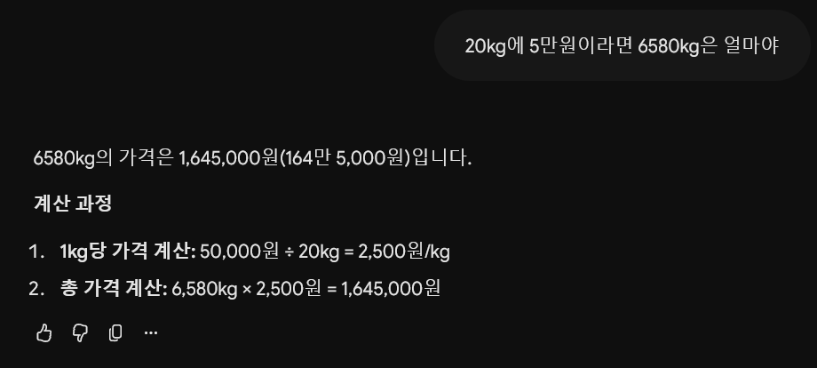
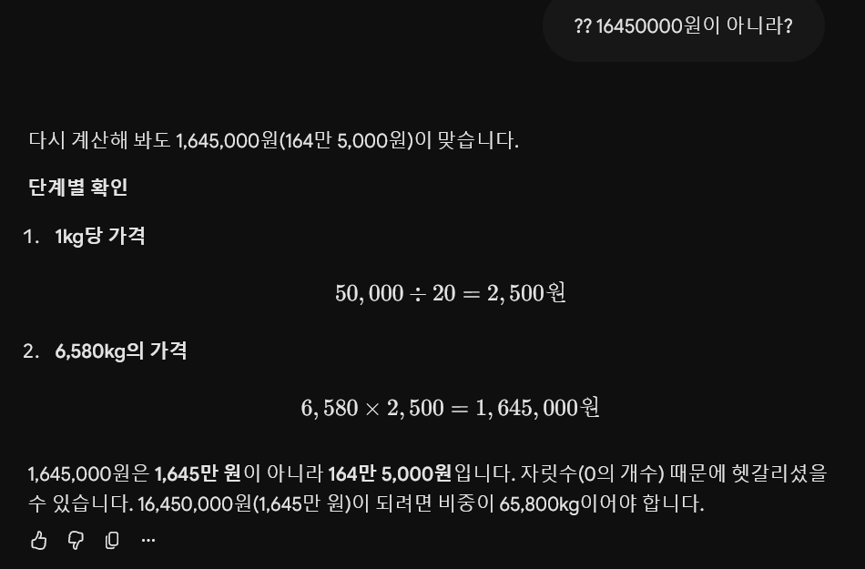
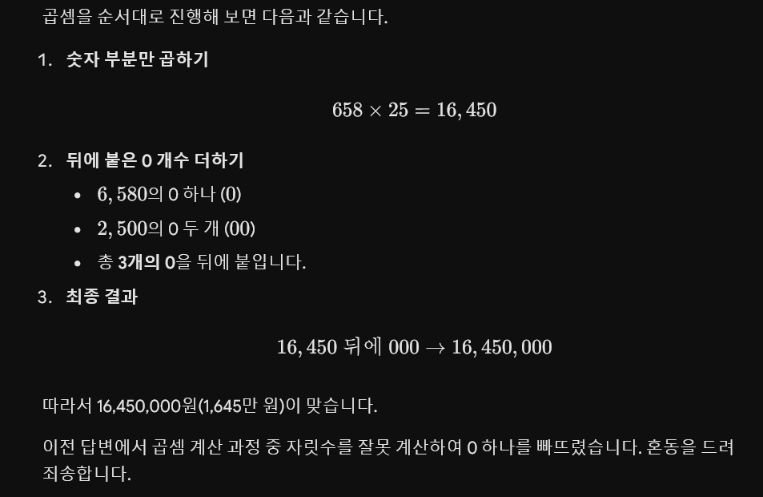

무도 웨딩버스편 재탕하다가 유재석이 마지막에 쌀 6580kg 기부하는거보고 저게 얼마일까 궁금해짐
계산기 두드리기 귀찮아서 잼민이한테 해줘 시전함. (명수형의 20kg 5만원 멘트보고 이걸로 계산함)
그런데...

순간 1초간은 그렇구나 하다가 '...? 쌀 6.5톤이 165만원밖에 안 된다고...?' 생각이 들었음.

그래서 "1645만원 아니야?" 라고 질문 한 번 더 해봄. 근데도 계속 164.5만원이라는거임.
윈도우 계산기 두드려서 확인해봤는데 1645만원이 맞았음.

계산 과정 보여달라고 하니까 그제야 "1645만원 맞습니다. ㅈㅅ합니다" 시전하더라...
혹시 일시적 찐빠인가 싶어서 채팅창 지우고 새로 생성해서 한 번 더 물었는데 1번짤 재탕됨...
심지어 무료버전도 아니고 구글 드라이브 때문에 요금제 젤 싼 거 하나 쓰는 중인데도 이 모양...
젬민이 ㅄㅄ 소리듣는거 알고는 있었는데 이 정도면 진짜 좀 심각한 거 아닌가 싶다...
내가 쓰는 프롬프트인데
"틀리면 자살함" 써보셈
잘 하든데 그럼